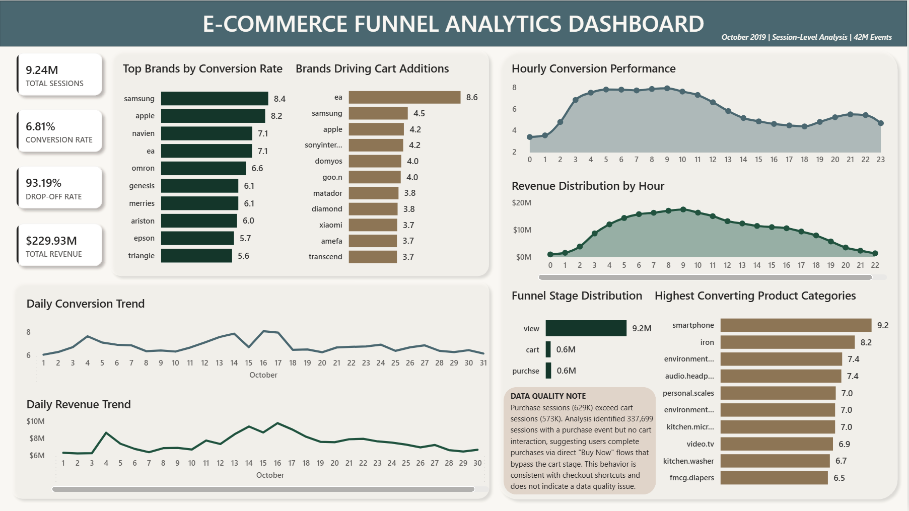
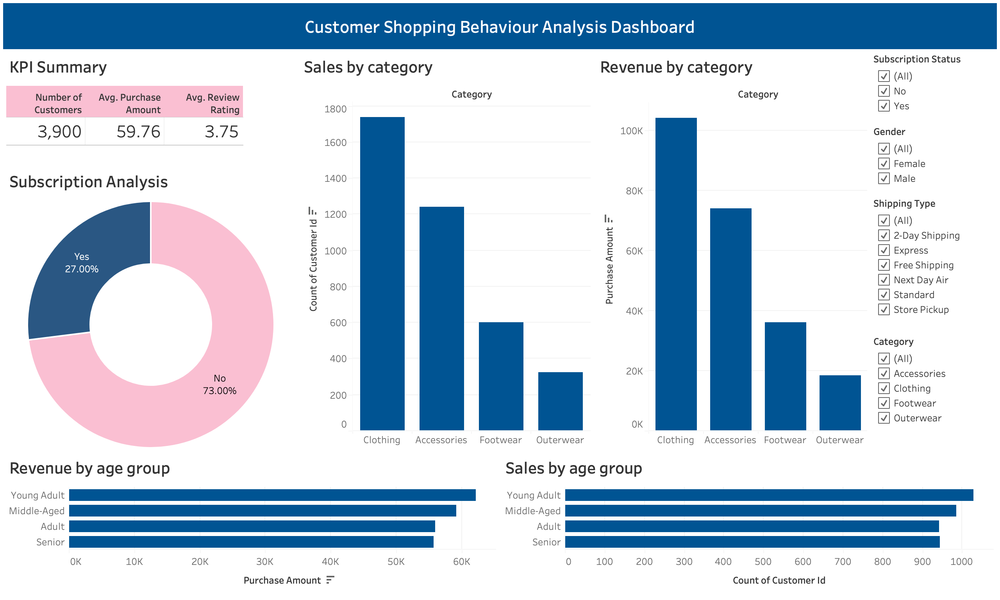
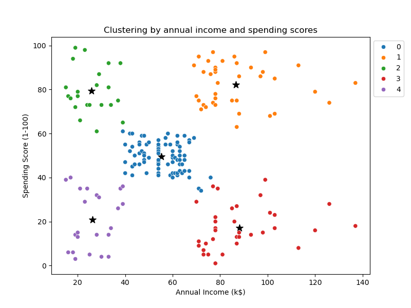
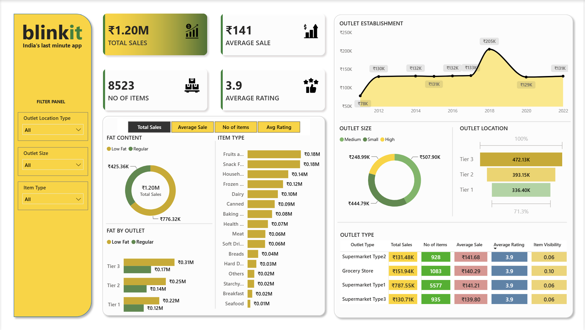

Analyzed customer retention and purchasing behavior using Cohort Analysis and RFM Segmentation to
identify churn risk, high-value customers, and revenue opportunities.
99,441 Orders | 96,096 Customers | 0.48% Month-1 Retention |
Cohort Analysis | RFM Segmentation


Power BI & Python analysis of 42.4M e-commerce events to identify funnel drop-offs, conversion
drivers, and revenue opportunities.
42.4M Events | 629K Purchases | Session Funnel | Conversion Optimization

Evaluate Facebook and Google Ads performance using statistical hypothesis testing to optimize
campaign ROI and marketing spend.
Facebook Ads | Google Ads | 114K Records | Hypothesis Testing

Analyzed customer purchasing behavior using PostgreSQL and Tableau to identify revenue trends,
customer preferences, and product performance for data-driven retail decisions.
3,900 Orders | PostgreSQL | Tableau Dashboard

Applied K-Means clustering to segment customers based on spending behavior, identifying
high-value customer groups and supporting targeted marketing strategies.
5 Customer Segments | Python | K-Means | Machine Learning

Analyzed global layoff trends using MySQL and Tableau to identify workforce reduction patterns,
industry impact, and funding relationships through interactive business dashboards.
2,300+ Companies | SQL Analytics | Tableau

Analyzed global COVID-19 trends using MySQL and Tableau to uncover infection patterns, mortality
insights, and geographic impact through interactive dashboards.
200+ Countries | SQL Analytics | Global Trends
 Analyzed Seattle Airbnb listings using Tableau to identify pricing trends, neighborhood performance,
property distribution, and revenue opportunities for short-term rental markets.
Analyzed Seattle Airbnb listings using Tableau to identify pricing trends, neighborhood performance,
property distribution, and revenue opportunities for short-term rental markets.
2,873 Listings | Tableau | Market Analytics

Analyzed Blinkit grocery sales using Power BI to uncover revenue trends, product performance,
outlet efficiency, and customer purchasing patterns for business decision-making.
₹1.20M Sales | 8,523 Products | Power BI | Retail
Analytics

Analyzed Nashville housing market data using SQL and Tableau to identify pricing trends, sales
performance, and geographic patterns through interactive business dashboards.
$18.46B Sales | 56,373 Properties | SQL | Real Estate Analytics

Analyzed movie industry data using Python to identify the key factors influencing box office
revenue through statistical analysis, correlation modeling, and data visualization.
Correlation Analysis | Python | Statistical Analysis
10+ END-TO-END ANALYTICS PROJECTS
110M+ ROWS ANALYZED
SQL • PYTHON • POWER BI • TABLEAU
CUSTOMER ANALYTICS • PRODUCT ANALYTICS • MARKETING ANALYTICS
FOUNDER @ IITNOTES.COM
350+ DSA PROBLEMS SOLVED IN C++
Data Analyst Intern
GoldRush Jewels
Jan 2026 – Apr 2026
• Cleaned and transformed 11 months of jewelry transaction data using SQL and Python.
• Built interactive Power BI dashboards tracking ₹35L+ revenue, repeat purchases, and locality-wise
sales.
• Identified sales trends, top-performing product categories, and customer purchasing patterns to
support inventory decisions.
Analyst Intern
HawkEye Capital
Jul 2025 – Aug 2025
• Analyzed mutual fund and portfolio datasets covering ₹10Cr+ AUM using Excel and Python.
• Benchmarked 50+ mutual funds on returns, volatility, Sharpe Ratio, and manager performance.
• Developed Tableau dashboards and analytical reports supporting investment research and portfolio
reviews.
I'm a Data Analyst specializing in customer segmentation, retention analysis, funnel
optimization,
and A/B testing, helping solve real business problems using datasets spanning 110M+
rows.
I work with SQL, Python, Power BI, and Tableau to build end-to-end analytics
solutions - from data preparation and statistical analysis to executive dashboards that support
business decisions.
Every project in this portfolio begins with a business question and
concludes
with actionable insights and recommendations.
I'm currently seeking Data Analyst and Business Analyst opportunities where analytical
rigor,
business thinking, and data-driven decision making create measurable impact.
Bachelor of Technology (B.Tech)
Delhi Technological University (DTU)
Electronics and Communication Engineering
2022 – 2026 (Expected)